SalmoSonar Visión
datasets · videos · predicciones · atención
Datasets /
Salmon body OBB
Pre-entrenar la forma del cuerpo de salmón. No es bajo el agua, así que no reemplaza imágenes del estanque.
- Dominio
- Salmón del Atlántico adulto fuera del agua, sobre tabla de fenotipado
- Formato
- YOLO-OBB
- Clases
- salmon
- Aquí
- completo · 684 imágenes · 684 objetos
- Licencia
- CC BY 4.0
- Cita
- An Automated Deep Learning Framework for Quantitative Phenotyping of Head Pigmentation Spots in Atlantic Salmon (Salmo salar). Zenodo, record 21373695
Archivos de la fuente
- README.dataset.txt 134 Bytes
- README.roboflow.txt 1012 Bytes
- data.yaml 76 Bytes
Todas
684 imágenes
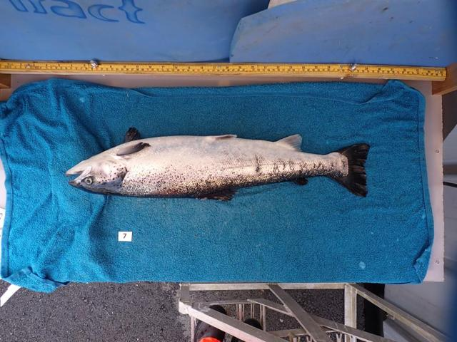
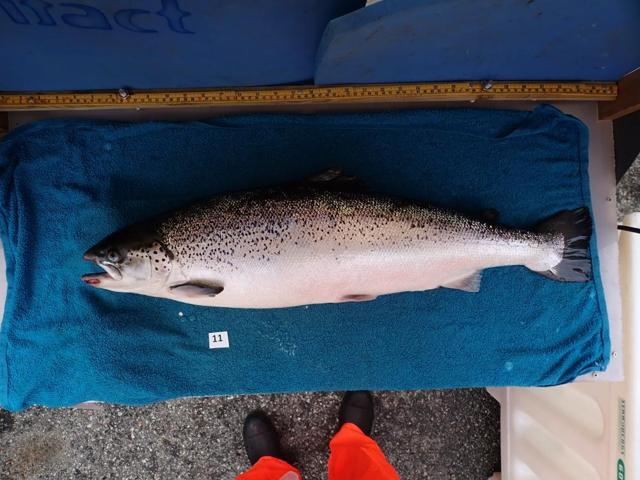
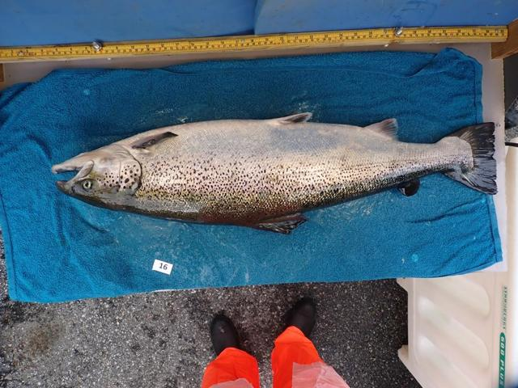
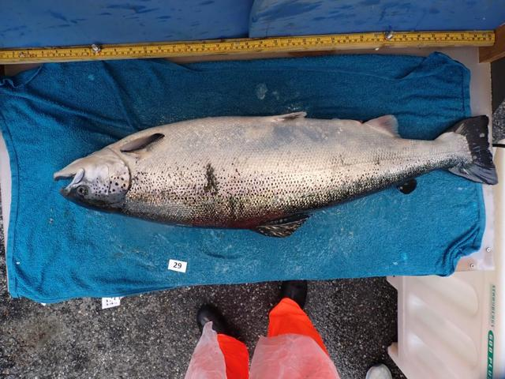
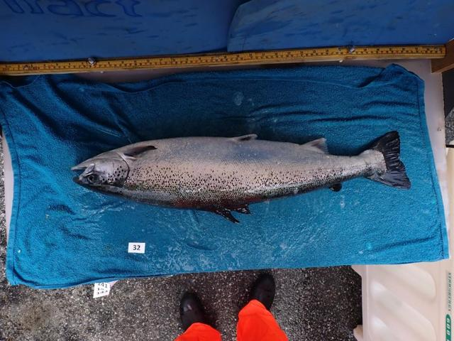
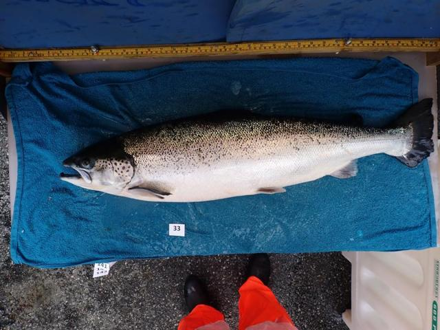
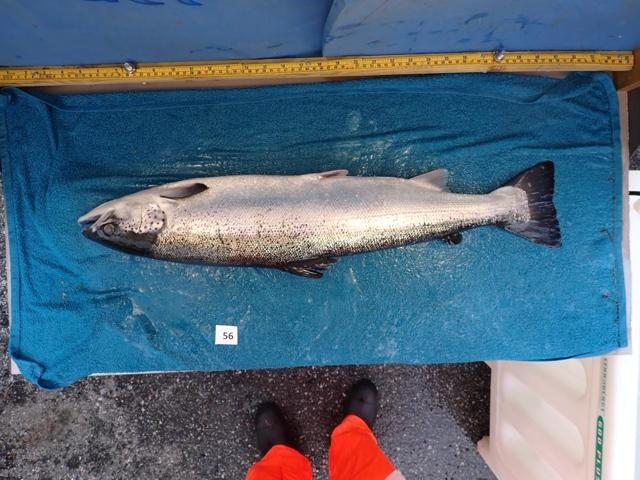
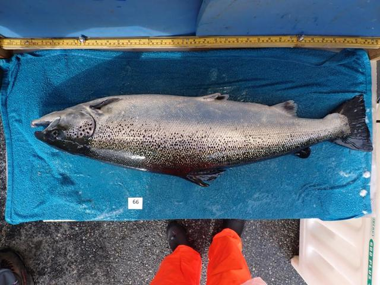
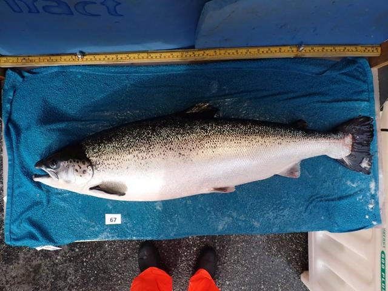
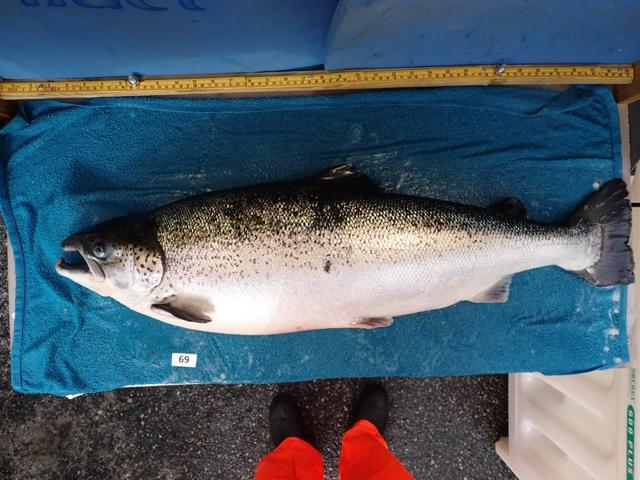
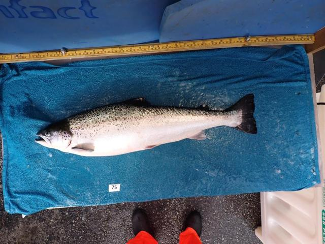
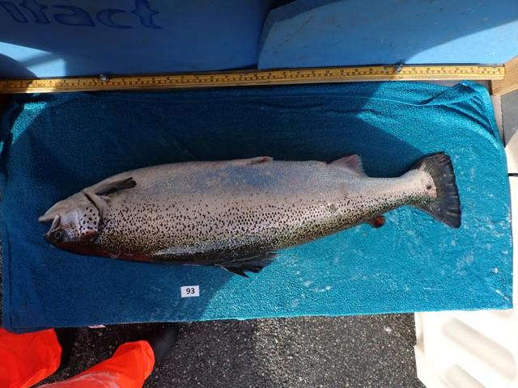